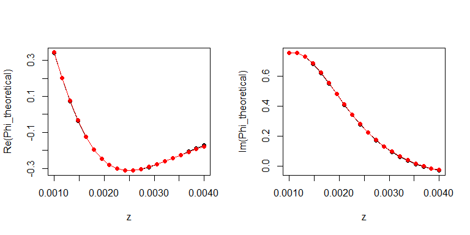

Simulation of the fractional noncentral Wishart distribution
It is well known how to simulate the noncentral Wishart distribution when the number of degrees of freedom \(\nu\) and the dimension \(d\) satisfy \(\nu > 2d-1\), or when \(\nu \geq d\) is an integer. In their paper Exact and high-order discretization schemes for Wishart processes and their affine extensions, Ahdida & Alfonsi provide a method that enables to simulate the Wishart process of dimension \(d\) for any number of degrees of freedom \(\nu \geq d-1\) and without restrictions on the other parameters. This method allows to simulate the noncentral Wishart distribution, in the way we will expose now.
Two properties of the noncentral Wishart distribution
We will need the two following properties.
Recall that the characteristic function of the noncentral Wishart distribution \(\mathcal{W}(\nu, \Sigma, \Theta)\) at \(Z\) is \[ \phi_{\nu,\Sigma,\Theta}(Z) = \frac{\exp\Bigl(i\textrm{tr}\bigl({(I_d - 2i Z\Sigma)}^{-1}Z\Theta\bigr)\Bigr)}{{\det(I_d - 2i Z\Sigma)}^{\frac{\nu}{2}}}. \]
\(\bullet\) First property of the Wishart distribution. Using the characteristic function, it is easy to check that \(A W A' \sim \mathcal{W}(\nu, A\Sigma A', A\Theta A')\) when \(W \sim \mathcal{W}(\nu, \Sigma, \Theta)\).
\(\bullet\) Second property of the Wishart distribution. Using the characteristic function, it is not hard to check that if \(W_1\) and \(W_2\) are two random matrices such that \(W_1 \sim \mathcal{W}(\nu, \Sigma_1, \Theta)\) and \((W_2 \mid W_1) \sim \mathcal{W}(\nu, \Sigma_2, W_1)\), then \(W_2 \sim \mathcal{W}(\nu, \Sigma_1+\Sigma_2, \Theta)\). This result is proved in A&A’s paper only for the covariance matrices \(J_d^i\) we will see later, by means of another method.
Let’s prove this result with the characteristic function. The conditional characteristic function of \(W_2\) given \(W_1\) at \(Z\) is \[ \frac{\exp\Bigl(i\textrm{tr}\bigl({(I_d - 2i Z\Sigma_2)}^{-1}ZW_1\bigr)\Bigr)}{{\det(I_d - 2i Z\Sigma_2)}^{\frac{\nu}{2}}}. \] The characteristic function of \(W_2\) is obtained by taking the expectation of this expression, and doing so we get \[ \frac{\phi_{\nu,\Sigma_1,\Theta}\bigl({(I_d - 2i Z\Sigma_2)}^{-1}Z\bigr)}{{\det(I_d - 2i Z\Sigma_2)}^{\frac{\nu}{2}}} = \frac{\exp\left(i\textrm{tr}\Bigl({\bigr(I_d - 2i {(I_d - 2i Z\Sigma_2)}^{-1}Z\Sigma_1\bigl)}^{-1}{(I_d - 2i Z\Sigma_2)}^{-1}Z\Theta\Bigr)\right)}{{\det(I_d - 2i Z\Sigma_2)}^{\frac{\nu}{2}} {\det(I_d - 2i {\bigl(I_d - 2i Z\Sigma_2)}^{-1}Z\Sigma_1\bigr)}^{\frac{\nu}{2}}}. \]
It is easy to check that the denominator is \({\det\bigl(I_d - 2iZ(\Sigma_1+\Sigma_2)\bigr)}^{\frac{\nu}{2}}\). The expression inside \(\textrm{tr}(\ldots)\) at the numerator is \[ {\Bigl((I_d - 2i Z\Sigma_2)\bigr(I_d - 2i {(I_d - 2i Z\Sigma_2)}^{-1}Z\Sigma_1\bigl)\Bigr)}^{-1}Z\Theta = {\bigr(I_d - 2iZ(\Sigma_1+\Sigma_2)\bigl)}^{-1}Z\Theta. \]
Thus we find that the the characteristic function of \(W_2\) is \(\phi_{\nu, \Sigma_1+\Sigma_2,\Theta}\), that is to say \(W_2 \sim \mathcal{W}(\nu, \Sigma_1+\Sigma_2, \Theta)\).
A&A’s simulation method
A&A’s simulation method has three steps:
it firstly gives an algorithm to simulate \(\mathcal{W}(\nu, J_d^1, \Theta)\), denoting by \(J_d^i\) the \(d \times d\) covariance matrix whose all entries are equal to zero except the \((i,i)\)-entry which is equal to one;
using the first step and the two properties of the Wishart distribution that we have seen, it provides a way to simulate \(\mathcal{W}(\nu, I_d^n, \Theta)\) where \(I_d^n = J_d^1 + \ldots + J_d^n\);
using the second step and the first property of the Wishart distribution that we have seen, it provides a way to simulate \(\mathcal{W}(\nu, \Sigma, \Theta)\) for any covariance matrix \(\Sigma\).
\(\bullet\) Simulation of \(\mathcal{W}(\nu, J_d^1, \Theta)\). This algorithm runs as follows. Let \((L,M,P)\) be an extended Cholesky decomposition of \(\Theta_{2:d,2:d}\). Set \(Q = \begin{pmatrix} 1 & 0 \\ 0 & P \end{pmatrix}\) and \(\widetilde{\Theta} = Q\Theta Q'\), then set \(u = L^{-1}\widetilde{\Theta}_{1, 2:(r+1)}'\) and \(v = \widetilde{\Theta}_{1,1} - \sum_{i=1}^r u_i^2\). Take \(Z_1, \ldots, Z_r \sim_{\text{iid}} \mathcal{N}(0,1)\) and set \(G_i = u_i + Z_i\). Finally, take \(X \sim \chi^2_{\nu-r, v}\) (noncentral chi-squared distribution) independent of the \(Z_i\), and set \[ W = Q' \begin{pmatrix} 1 & 0 & 0 \\ 0 & L & 0 \\ 0 & M & I_{d-r-1} \end{pmatrix} \begin{pmatrix} X + \sum_{i=1}^r G_i^2 & G' & 0 \\ G & I_r & 0 \\ 0 & 0 & 0 \end{pmatrix} \begin{pmatrix} 1 & 0 & 0 \\ 0 & L' & M' \\ 0 & 0 & I_{d-r-1} \end{pmatrix} Q. \] Then A&A have shown that \(W \sim \mathcal{W}(\nu, J_d^1, \Theta)\).
\(\bullet\) Simulation of \(\mathcal{W}(\nu, I_d^n, \Theta)\). Let \(P\) be the permutation matrix exchanging rows \(1\) and \(2\). Using the previous algorithm, simulate \(W_1 \sim \mathcal{W}(\nu, J_d^1, \Theta)\). By the first property of \(\mathcal{W}\) we have seen, \(P W_1 P \sim \mathcal{W}(\nu, J_d^2, P\Theta P)\). Then, still using the previous algorithm, simulate \((W_2 \mid W_1) \sim \mathcal{W}(\nu, J_d^1, P W_1 P)\). By the second property of \(\mathcal{W}\) we have seen, \(W_2 \sim \mathcal{W}(\nu, I_d^2, P \Theta P)\). And by the first property, \(P W_2 P \sim \mathcal{W}(\nu, I_d^2, \Theta)\). Continuing so on, we can simulate \(\mathcal{W}(\nu, I_d^n, \Theta)\) for any \(n \leq d\).
\(\bullet\) Simulation of \(\mathcal{W}(\nu, \Sigma, \Theta)\). Finally, given any covariance matrix \(\Sigma\) of rank \(n\), take the \(\widetilde{C}\) matrix of an extended Cholesky decomposition of \(\Sigma\) with permutation matrix \(P\), and set \(A = P'\widetilde{C}\). Simulate \(Y \sim \mathcal{W}\bigl(\nu, I_d^n, A^{-1}\Theta{(A^{-1})}'\bigr)\) with the previous algorithm and finally set \(W = AYA'\), so that \(W \sim \mathcal{W}(\nu, \Sigma, \Theta)\) by the first property and by the property of the Cholesky decomposition.
Checking
The algorithm is implemented in my package matrixsampling. Let’s try it.
library(matrixsampling)
p <- 6
nu <- 6.3
Sigma <- toeplitz(p:1)
Theta <- matrix(1, p, p)
nsims <- 100000
W <- rwishart(nsims, nu, Sigma, Theta)As expected, the average simulated matrix is close to the theoretical mean \(\nu \Sigma + \Theta\):
round((nu*Sigma + Theta) - apply(W, 1:2, mean), 2)
## [,1] [,2] [,3] [,4] [,5] [,6]
## [1,] 0.02 0.06 0.00 -0.05 -0.01 -0.04
## [2,] 0.06 0.06 -0.02 -0.06 -0.04 -0.06
## [3,] 0.00 -0.02 -0.10 -0.11 -0.07 -0.09
## [4,] -0.05 -0.06 -0.11 -0.07 -0.04 -0.04
## [5,] -0.01 -0.04 -0.07 -0.04 -0.01 -0.04
## [6,] -0.04 -0.06 -0.09 -0.04 -0.04 -0.08Let’s compare the theoretical characteristic function to its approximation obtained from the simulations:
z <- seq(0.001, 0.004, length.out = 20)
Z <- sapply(z, function(z){
z*diag(p) + matrix(z, p, p)
}, simplify=FALSE)
tr <- function(A) sum(diag(A))
Phi_theoretical <- sapply(Z, function(Z){
complexplus::Det(diag(p) - 2*1i*Z%*%Sigma)^(-nu/2) *
exp(1i*tr(solve(diag(p) - 2*1i*Z%*%Sigma) %*% Z %*% Theta))
})
Phi_sims <- sapply(Z, function(Z){
mean(apply(W, 3, function(W){
exp(1i*tr(Z%*%W))
}))
})
layout(t(1:2))
plot(z, Re(Phi_theoretical), type="o", pch=19)
lines(z, Re(Phi_sims), type="o", pch=19, col="red")
plot(z, Im(Phi_theoretical), type="o", pch=19)
lines(z, Im(Phi_sims), type="o", pch=19, col="red")